|
Introduction
Comics
Information
Allies
Villains
Animated Series
Movies
Photo Gallery
Video Games
As A
Whole
|
Animated Series of

|
 |
|
Daredevil &
Lightning (proposed) |
|
|
|
Daredevil
and Lightning, the Super Dog (proposed: 19??)
DD has been proposed as an
animated series a number of times, but never seems to make it off the
drawing board. Shown here are 2 "presentation posters" which appeared in
Comics Feature #33 (a fanzine issue which had a feature on current &
proposed Marvel animation projects at that time). The studio which will
be producing a cartoon often creates a number of presentation cels
featuring various characters which would appear in the series, some
story ideas, and some "posters" like those shown here. |
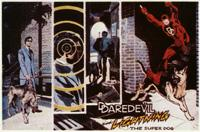
|
|
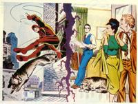
|
Often the people involved in an
animation project have no connections to the comic book whatsoever. In
the poster to the left, as well as the poster above, Matt has very dark
hair rather than the fiery red hair we've all grown accustomed to.
|
|
|
|
Spider-Man and
his Amazing Friends (1981-1984) |
|
|
|
Spider-Man
and his Amazing Friends
Marvel Productions, Ltd.
"Attack of the Arachnoid" - Season 3, Episode 4
[Originally aired on 8 Oct 1983 on NBC]
writer: Michael Reaves
Synopsis: Spidey goes to prison after being framed by a scientist
named Zoltan. It turns out Scorpion is in the next cell. In seeking
revenge against Spidey, the Scorpion ends up breaking them both out of
prison. They're both recaptured, but Iceman and Firestar have discovered
the real culprit that framed Spidey, and Spidey's lawyer Matt Murdock
hands the police a court order to have Spidey released. Spidey and
friends then go to stop Zoltan once and for all.
Note: In this third season, the show was actually part of an hour
long slot called "The Amazing Spider-Man and the Incredible Hulk".
Spidey and the Hulk each had a half hour episode during this time slot.
|
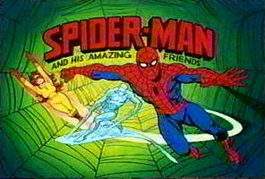
|
|
|
|
Marvel Action
Hour (1994-1995) |
|
|
|
Marvel Action
Hour (FF & Iron Man)
Marvel Productions, Ltd./New World Animation
"And a Blind Man Shall Lead Them" - Season 2, Episode 1
Matt Murdock/Daredevil (Bill Smitrovich)
Hour long cartoon series; first
half featured Iron Man, second half the Fantastic Four.
This story was loosely based on
the story originally presented in Fantastic Four issues #39 & 40.
"Behold a Distant Star"
- Season 2, Episode 10
Daredevil only has a very brief cameo in this episode (with no speaking
part). He's seen briefly as the Super Skrull is heading to the prison.
The image to the right is the
color key cel used for Daredevil in the FF series. |
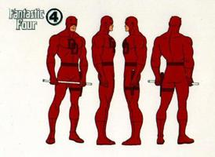
|
|
|
|
Spider-Man,
The Animated Series (1994-1998)
|
|
|
|
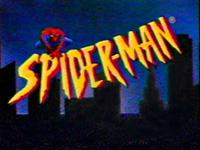
|
Spider-Man, The Animated
Series
Marvel Productions, Ltd./New World Animation
"Framed" (Sins of the Fathers, Chpt.6) - Season 3, Episode 6
[Originally aired on 21 Sep 1996 FOX]
story: John Semper, Mark Hoffmeier
teleplay: Brooks Wachtel, Cynthia Harrison
Daredevil's voice: Edward Laurence Albert
|
Spider-Man, The Animated
Series
Marvel Productions, Ltd./New World Animation
"The Man Without Fear" (Sins of the Fathers, Chpt.7) - Season 3,
episode 7
[Originally aired on 28 Sep 1996 FOX]
story: John Semper, Mark Hoffmeier
teleplay: Sean Catherine Derek
Daredevil's voice: Edward Laurence Albert
Note: Edward Albert is
the son of veteran movie/tv actor Eddie Albert and has appeared in over
50 movies and numerous TV shows. |
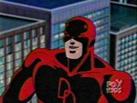 |
|
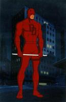
|
Spider-Man, The Animated
Series
Color Key Cel - apx. 1996 (character appeared in series that year)
art: Del Barras (color artist: Allyn Conley)
Marvel Animation Studios
This character cel is shown on a laser
background. |
|
|
|
Daredevil,
Man Without Fear (proposed - 1999)
|
|
|
Daredevil, Man Without Fear
Cartoon Factory - So. California
The most interesting item to
note about this proposed series is that it's being pitched as a series
for grownups/mature audiences unlike the usual Marvel cartoons that come
out. Considering the fact that there are a number of highly successful
animated series for "grownups" currently, DD could be an interesting
addition indeed! Shown are some scans of images used in the proposal
process with the networks.
Update: the series was accepted
by Fox, but Marvel decided to hold off until the Daredevil Movie came
out. Unfortunately, since then, Marvel hasn't put any energy into
restarting the cartoon. |

|
|
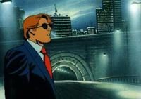
 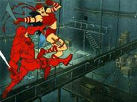
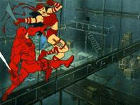
 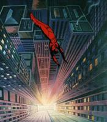
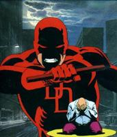
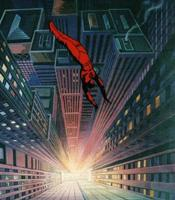
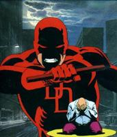
|
RETURN TO DAREDEVIL'S INTRODUCTION PAGE
|